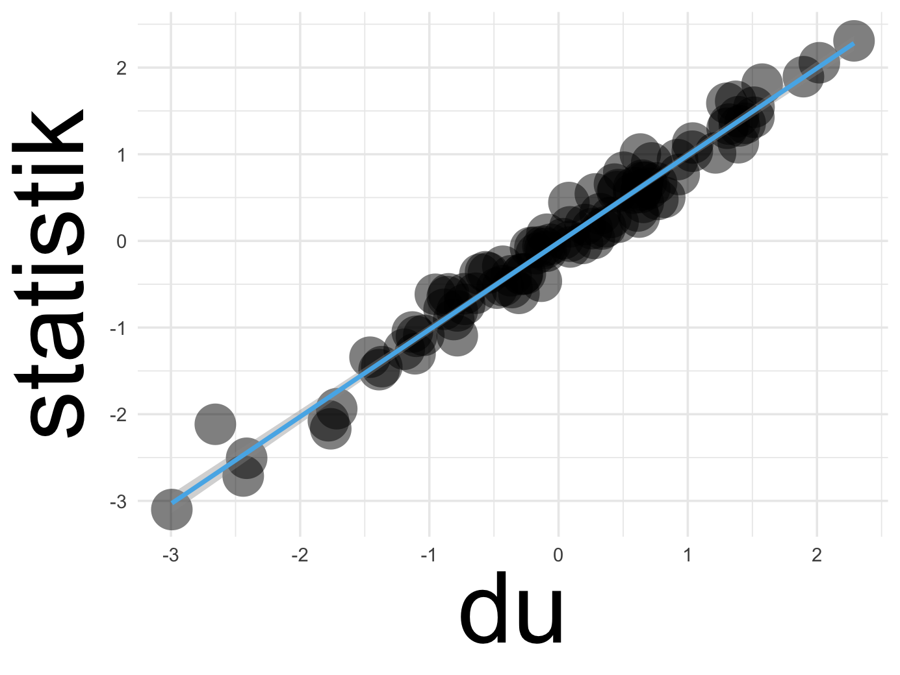
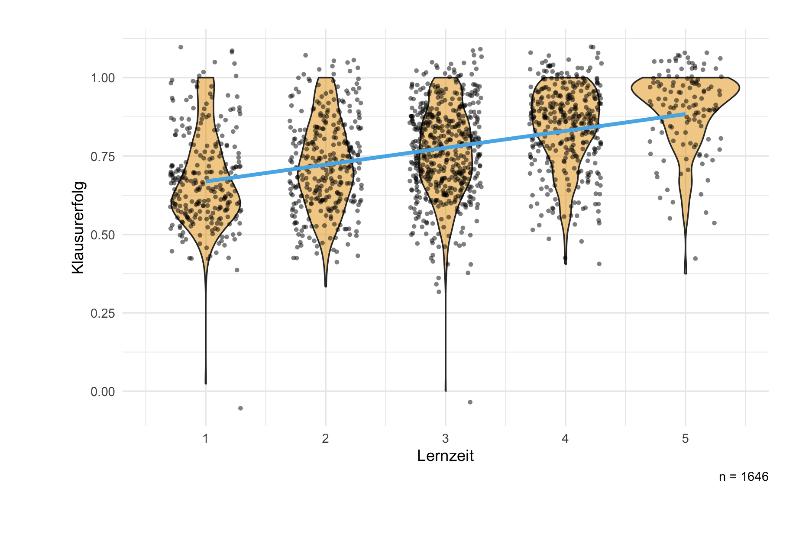

1 Organisatorisches
Schlüsselwörter
Statistik, Prognose, Modellierung, R, Datenanalyse, Regression

Your favorite language
This book is written in German. However, your browser will easily translate the text to your favorite language. Please check your browser’s documentation for details. It should be done with one or two clicks. \(\square\)
1.1 Es geht um Ihren Lernerfolg
Meister Yoda rät: Lesen Sie die folgenden Hinweise, s. Abbildung 1.1.
1.1.1 Lernziele
Die Studierenden sind mit wesentlichen Methoden der explorativen Datenanalyse vertraut und können diese selbständig anwenden.
Die Studierenden können gängige Forschungsfragen in lineare Modelle übersetzen, diese auf echte Datensätze anwenden und die Ergebnisse interpretieren.
1.1.2 Was lerne ich hier und wozu ist das gut?
Was lerne ich hier?
Sie lernen das Handwerk der Datenanalyse mit einem Schwerpunkt auf Vorhersage (Prognose). Anders gesagt: Sie lernen, Daten aufzubereiten und aus Daten Vorhersagen abzuleiten. Zum Beispiel: Kommt ein Student zu Ihnen und sagt “Ich habe 42 Stunden für die Klausur gelernt, welche Note kann ich in der Klausur erwarten?”. Darauf Ihre Antwort: “Auf Basis meiner Daten und meines Modells müsstest du eine 2,7 schreiben!” Außerdem lernen Sie, wie man die Güte einer Vorhersage auf Stichhaltigkeit prüft. Denn Vorhersagen kann man ja in jeder Eckkneipe oder beim Wahrsager bekommen. Wir wollen aber belastbare Vorhersagen und wollen zumindest wissen, wie (un)sicher eine Vorhersage ist.
Warum ist das wichtig?
Wir wollen nicht auf Leuten vertrauen, die behaupten, sie wüssten, was für uns gut ist. Wir wollen selber die Fakten beurteilen können.
Wozu brauche ich das im Job?
Datenanalyse spielt bereits heute in vielen Berufen eine Rolle. Tendenz stark zunehmend.
Wozu brauche ich das im Studium?
In Forschungsarbeiten (wie in empirischen Forschungsprojekten, etwa in der Abschlussarbeit) ist es üblich, statistische Ergebnisse quantitativ zu analysieren.
Ist Statistik nicht sehr abstrakt?
Der Schwerpunkt dieses Kurses liegt auf Anwenden und Tun; ähnlich dem Erlernen eines Handwerks. Theorien und Abstraktionen stehen in diesem Buch nur am Rand.
Gibt es auch gute Jobs, wenn man sich mit Daten auskennt?
Das World Economic Forum (2020) berichtet zu den “Top 20 job roles in increasing and decreasing demand across industries” (S. 30, Abb. 22): “1. Data Analysts und Scientists, 2. AI and Machine Learning Specialists, 3. Big Data Specialists”.
1.1.3 Was ist hier das Erfolgsgeheimnis?
Das Lesen einer Schwimmfibel nutzt wenig, wenn Sie Freischwimmer werden wollen. Es hilft nichts: Rein in die Fluten! Wenn das Wasser nicht tief ist und man jederzeit im Trockenen Pause machen kann, steht Ihrem Fortschritt beim Lernen nichts im Weg. Ich gebe zu, der Vergleich ist nicht gerade subtil. Aber es ist so: Sie lernen durch Tun (Lovett & Greenhouse, 2000). Dieses Buch bietet dafür reichhaltige Gelegenheit. Nutzen Sie sie. Jedes Kapitel führt am Ende eine Reihe von Aufgaben auf, alle mit Lösungen. So können Sie Ihren Lernfortschritt testen. Dass Schwierigkeiten auftreten, wenn man etwas Neues lernt, ist normal. Das geht fast allen so. Ihren Lernerfolg kann nur eine Sache gefährden: Wenn Sie aufgeben. Bleiben Sie dran, und der Erfolg wird sich einstellen! Abbildung 1.2 zeigt Daten von \(n=1646\) Studierenden, die zeigen, dass regelmäßiges Üben und Dranbleiben mit Erfolg einhergeht (Sauer, 2017). Dran bleiben ist der Schlüssel zum Erfolg. Üben Sie regelmäßig. Geben Sie bei Schwierigkeiten nicht auf.

Wichtig
Dran bleiben ist der Schlüssel zum Erfolg. Üben Sie regelmäßig. Geben Sie bei Schwierigkeiten nicht auf. 🏋️♂️🔁🔑✨ \(\square\)
Haben Sie Motivation nötig? Dann schauen Sie sich das Video mit einer Ansprache zur Motivation an.
1.1.4 Voraussetzungen
Um von diesem Kurs am besten zu profitieren, sollten Sie Folgendes mitbringen:
- Bereitschaft, Neues zu lernen
- Bereitschaft, bei Schwierigkeiten nicht gleich aufzugeben
- Kenntnis grundlegender Methoden wissenschaftlichen Arbeitens
Was Sie nicht brauchen, sind besondere Mathe- oder Statistik-Vorkenntnisse.
1.1.5 Überblick über das Buch
Abb. Abbildung 1.3 gibt einen Überblick über den Verlauf und die Inhalte des Buches. Das Diagramm hilft Ihnen, zu verorten, wo welches Thema im Gesamtzusammenhang steht.
flowchart LR
subgraph R[Rahmen]
direction LR
subgraph V[Vorbereiten]
direction TB
E[Einlesen] --> Um[Umformen]
end
subgraph M[Grundlagen des Modellieren]
direction TB
M1[Punktmodelle] --> Vis[Verbildlichen]
Vis --> U[Ungewissheit]
end
subgraph N[Geradenmodelle]
direction TB
G1[Geradenmodelle 1] --> G2[Geradenmodelle 2]
end
V --> M
M --> N
end
Das Diagramm zeigt auch den Ablauf einer typischen Datenanalyse. Natürlich kann man sich auch andere sinnvolle Darstellungen dieses Ablaufs vorstellen.
1.1.6 PDF-Version
Sie können die Druck-Funktion Ihres Broswers nutzen, um ein PDF-Dokument eines Kapitels dieses Buchs zu erstellen.
1.2 Lernhilfen
Auf der Webseite “Datenwerk” wird eine große Zahl an Aufgaben bereitgestellt.1
Am Ende jedes Kapitels dieses Buchs finden Sie eine Auswahl an Aufgabennamen, die Sie im Datenwerk finden. Beachten Sie die Hinweise zu den Aufgaben.
Außerdem tauchen im Verlauf jedes Kapitels Übungsaufgaben an verschiedenen Stellen auf, so dass Sie den jeweiligen Stoff sofort üben und Ihr Verständnis prüfen können. Das Buch verweist auf eine Reihe von Online-Materialien. So ist der gesamte R-Code für dieses Buch auf dem Github-Repo dieses Buches zu finden: https://github.com/sebastiansauer/statistik1.
Schauen Sie sich mal den YouTube-Kanal sebastiansauerstatistics an und dann z.B. die Playlist “R”. Dort finden Sie Videos zum Thema dieses Buches.
In Gleichungen werden zum Teil Farben verwendet, diese haben folgende Bedeutung:
- Y bzw. Abhängige Variable
- X bzw. Unabhängige Variable
- e bzw. Fehlerterm
- b0 bzw. Achsenabschnitt
- b1 bzw. Steigung (Regressionsgewicht)
- m bzw. y-Dach bzw. Modellwert
In Diagrammen werden auch Farben verwendet, die haben allerdings keine feste Bedeutung, sondern dienen der Übersichtlichkeit.
1.3 Software
1.3.1 R
Sie benötigen R, RStudio und einige R-Pakete für diesen Kurs. Dieses Buch enthält “mittel” viel R. Auf fortgeschrittene R-Techniken wurde aber komplett verzichtet. Dem einen Anfänger oder der anderen Anfängerin mag es dennoch als “viel Code” erscheinen. Es wäre ja auch möglich gewesen, auf R zu verzichten und stattdessen eine “Klick-Software” zu verwenden. JASP oder Jamovi sind Beispiele für tolle Software aus dieser Kategorie. Ich glaube aber, der Verzicht auf eine Skriptsprache (R) wäre ein schlechter Dienst an den Studentis. Mit Blick auf eine “High-Tech-Zukunft” sollte man zumindest mit etwas Computer-Code vertraut sein. Auf Computercode zu verzichten, erschiene mir daher fahrlässig für die “Zukunftsfestigkeit” der Ausbildung. Sie finden den R-Code für jedes Kapitel im Github-Repositorium dieses Buches.2
1.3.2 R-Pakete
In den meisten Kapiteln dieses Buches benötigen Sie die folgenden zwei R-Pakete: tidyverse und easystats.
Weitere Hinweise zu R finden Sie in Kapitel 3.
1.4 Benötigte Daten
In den meisten Kapiteln dieses Buches analysieren wir Daten; meist ist das der Datensatz mariokart, wo Auktionen zu diesem Computerspiel in einigen Merkmalen aufgeführt sind. Sie können den Datensatz auf folgende Art importieren, s. Listing 1.1. Keine Sorge, wenn Ihnen im Moment nicht klar ist, was Sie mit dem R-Code anfangen sollen. Sie lernen das Nötige in Kapitel 3.
mariokart_path <- "https://vincentarelbundock.github.io/Rdatasets/csv/openintro/mariokart.csv"
mariokart <- read.csv(mariokart_path)Ein Data-Dictionary (Codebook) finden Sie in Anhang B.
1.5 Hinweise
Der Unterricht zu diesem Modul wird id.R. nur ein Mal pro Jahr angeboten (also nur jedes zweite Semester).
Eine Prüfung in diesem Modul ist in jedem Semester möglich.
1.6 Prüfung
Die folgenden Hinweise sind dem Hinweisbuch des Autors entnommen. Lesen Sie auch die übrigen Hinweise dort.3
1.6.1 Prüfungleistung
Die Prüfungsleistung besteht aus einer Hauptleistung (keine Bonusleistung).
Die Hauptleistung besteht aus einer Projektarbeit im Form eines Prognosewettbewerbs.
1.6.2 Zum Prognosewettbewerb
Im Hinweisbuch finden Sie Hinweise zur Prüfung.4
1.6.3 Prüfungsrelevanter Stoff
Beachten Sie die Hinweise zum prüfungsrelevanten Stoff.5
1.6.4 Wie kann ich mich auf die Prüfung vorbereiten?
1.6.5 Allgemeine Prüfungshinweise
Die folgenden Hinweise gelten grundsätzlich, d.\(\,\)h. soweit nicht anders in der jeweiligen Prüfung bzw. der jeweiligen Aufgabe angegeben. Nichtbeachten von Prüfungshinweisen kann zu Punkteabzug oder Nichtbestehen führen. Lesen Sie sich diese Hinweise im eigenen Interesse sorgfältig durch. Die Kenntnis dieser Hinweise wird bei der Begutachtung vorausgesetzt.
Für eine einfachere Kommunikation kontaktieren Sie mich per E-Mail bei Fragen, die nur Sie betreffen. Bei Fragen von allgemeinem Interesse (z.\(\,\)B. “Bis wann müssen wir die Arbeit abgeben?”) nutzen Sie bitte (sofern verfügbar) das Kursforum, damit die Kommilitonen auch von dem Austausch profitieren.
Beachten Sie die allgemeinen Prüfungshinweise.7
1.6.6 Lieblingsfehler
Vermeiden Sie diese häufigen Fehler im Prognosewettbewerb.8
1.6.7 Fazit
🍀🍀🍀VIEL ERFOLG!🍀🍀🍀
1.7 Griechische Buchstaben
In diesem Buch werden ein paar (wenige) griechische Buchstaben verwendet, die in der Statistik üblich sind. Häufig werden griechische Buchstaben verwendet, um eine Grundgesamtheit (Population) zu beschreiben (die meistens unbekannt ist). Lateinische (“normale”) Buchstaben werden demgegenüber verwendet, um eine Stichprobe (Datensatz, vorliegende Daten) zu beschreiben. Tabelle 1.1 stellt diese Buchstaben zusammen mit ihrer Aussprache und Bedeutung vor.
| Zeichen | Aussprache | Buchstabe | Bedeutung in der Statistik |
|---|---|---|---|
| \(\beta\) | beta | b | Regressionskoeffizent |
| \(\mu\) | mü | m | Mittelwert |
| \(\sigma\) | sigma | s | Streuung |
| \(\Sigma\) | Sigma | S | Summenzeichen |
| \(\rho\) | rho | r | Korrelation (nach Pearson) |
Mehr griechische Buchstaben finden sich z.\(\,\)B. in Wikipedia.9
1.8 Zitation
Bitte zitieren Sie dieses Buch wie folgt:
Sauer, S. (2024). Statistik1. https://statistik1.netlify.app/
Hier sind die maschinenlesbaren Zitationsinfos (Bibtex-Format), die Sie in Ihre Literatursoftware importieren können:
@book{sauer_statistik1,
title = {Statistik1},
rights = {CC-BY-NC},
url = {https://statistik1.netlify.app/},
author = {Sauer, Sebastian},
date = {2024},
}Hier ist die DOI:

https://github.com/sebastiansauer/statistik1/tree/main/R-code-for-all-chapters↩︎
https://hinweisbuch.netlify.app/080-hinweise-pruefung-prognosewettbewerb-frame↩︎
https://hinweisbuch.netlify.app/010-hinweise-pruefung-allgemein-frame#pr%C3%BCfungsrelevanter-stoff↩︎
https://hinweisbuch.netlify.app/150-hinweise-pruefungsvorbereitung-frame↩︎
https://hinweisbuch.netlify.app/010-hinweise-pruefung-allgemein-frame↩︎
https://hinweisbuch.netlify.app/170-beispiele-fehler-prognosewettbewerb-frame↩︎